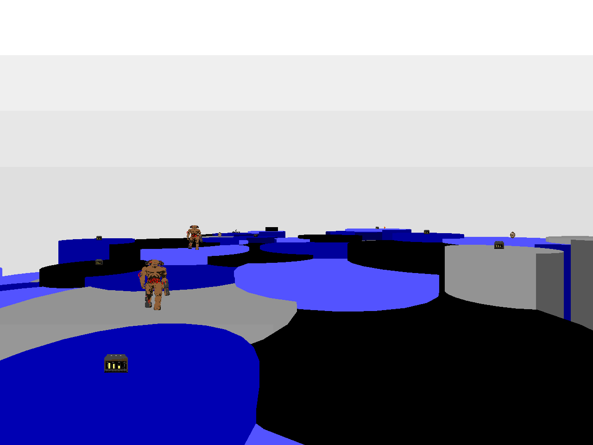

DOWNLOAD LINKS


| Year | 2022 |
| IWAD | doom2.wad |
| Source port | MBF21-compatible |
| Game mode(s) | Single-player |
| Map(s) contributed | MAP18 |
DIY is a 32-map community megawad for MBF21-compatible source ports. Originally hosted by xvertigox, the project was picked
up and seen to the finish line by ViolentBeetle when the former host seemingly disappeared for a long time and no progress was made after a
while. The project employs an aesthetic (partly) inspired by Spendoragon's 1 Bad Wad, with minimalistic, solid-color textures.
My contribution to DIY occupies the MAP18 slot, and it bears the name "Zeusian Circles". It's a series of floating, circular platforms in a white
void, with gameplay that leans towards the slaughter style. Scattered around the platforms are three skull keys that ultimately open the exit. I
speedmapped the map in about 90 minutes, so it's really nothing too special, but I had fun with making it.